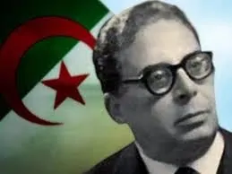

Biographie
- Moufdi Zakaria né le 12 juin 1908 à Beni Isguen, (près de Ghardaïa) dans la région du Mzab. Surnommé « le Poète de la Révolution algérienne », son véritable nom fut Cheikh Zakaria Ben Slimane Ben Yahia Ben Cheikh Slimane Ben Hadj Aissa.
- Le surnom Moufdi , devenu son pseudonyme littéraire, lui a été décerné par Slimane Boudjenah.
- Il quitte très tôt son village natal pour rejoindre son père, alors commerçant à Annaba où il reçoit son enseignement, et où il s'initie à la grammaire et au fiqh.
- D'Annaba il rejoint Tunis, chez son oncle. Là, il poursuit ses études, successivement à l’école Es-Salem, l’école El Khaldounia et l’université de la Zeïtouna.
- En fréquentant le milieu estudiantin algérien à Tunis, il se lie d'amitié avec le poète tunisien Abou el Kacem Chebbi et le poète algérien Ramadane Hammoud, avec lequel il fonde l'association littéraire El-Wifaq (l'Entente) qui publiait une revue entre 1925 et 1930.
- De retour en Algérie, il crée une association similaire, publie la revue El‑Hayet dont seuls trois numéros sortiront en 1933.
- Membre actif de l'Association des Étudiants musulmans de l'Afrique du Nord à partir de 1925, il critique la tendance assimilationniste du mouvement Jeune Algérien, et proteste contre les fêtes du Centenaire en 1930.
- Bien qu'éprouvant des sympathies pour le mouvement réformiste des Oulémas, c'est à l'Étoile Nord‑Africaine qu'il adhère lorsque le mouvement s'implante en Algérie vers 1933.
- Il milite ensuite au Parti du peuple algérien (PPA) après la dissolution de l'Étoile, compose Fidaou el Djazair, l'hymne du (PPA), et participe aux meetings.
- Arrêté le 22 août 1937 en même temps que Messali Hadj et Hocine Lahoual, il est libéré en 1939. Il poursuit son action, lance avec des militants le journal Achaâb, collabore avec des journaux tunisiens en signant El‑Fata El Watani ou Abou Firas.
- De nouveau arrêté en février 1940, il est condamné à 6 mois de prison. En 1943‑1944, il est à la tête avec d'autres, d'un restaurant à Alger ; il collabore alors à des journaux clandestins : Al‑Watan et L'Action Algérienne.
- Après le 8 mai 1945, arrêté, il reste trois ans en prison. Libéré, il adhère au MTLD
- Candidat aux élections à l'Assemblée algérienne, il est victime des fraudes électorales.
- En 1955, il rejoint le FLN. Arrêté en avril 1956, il est incarcéré à la prison Barberousse à Alger où il écrit l'hymne national Kassaman qui sera mis en musique, la première fois par Mohamed Triki en 1956, ensuite par le compositeur égyptien Mohamed Fawzi et enregistré dans les studios de la Radio Télévision Tunisienne en juillet 1957.
- La seconde version du texte sera écrite en collaboration avec l'avocat et homme de lettres tunisien Ammar Dakhlaoui1.
- Libéré trois ans plus tard, il s'enfuit au Maroc, puis en Tunisie où il collabore au journal El Moudjahid jusqu'en 1962. Après l'indépendance, il se consacre à la création littéraire.
- Exerçant la profession de représentant de commerce en parfumerie (représentant notamment d'une firme belge), il n'aurait pas eu de domicile fixe.
- Poète du mouvement national et de la Révolution algérienne, son souffle est puissant. Sa poésie est solide et a pour but d'aiguiser la conscience nationale.
- Le poète meurt en 1977 en exil à Tunis d'une crise cardiaque. Il est enterré à Beni Izguen.
